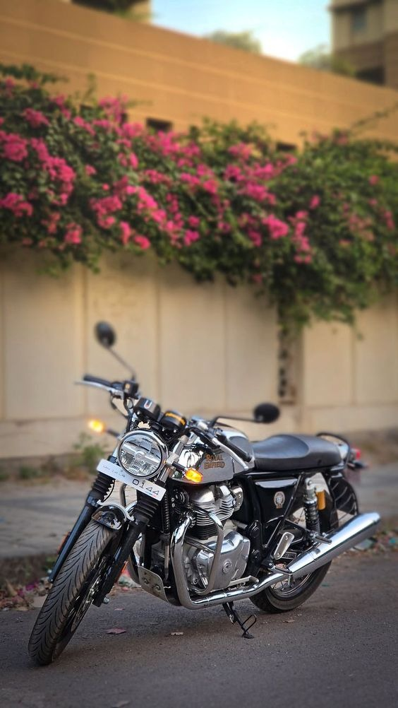

Engine: The Continental GT 650 is powered by a 648cc parallel-twin, air-cooled engine that produces 47 bhp at 7,150 RPM and 52 Nm of torque at 5,250 RPM. This engine is known for its smooth throttle response and strong low-end performance, making it suitable for both city riding and highway cruising.
